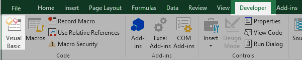
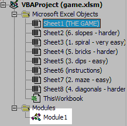
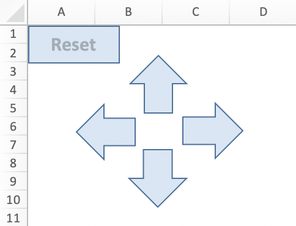
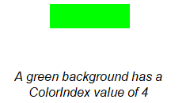
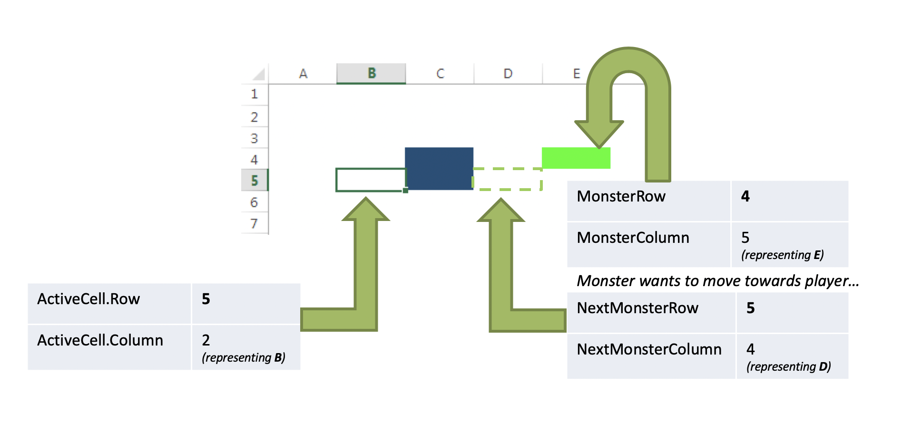
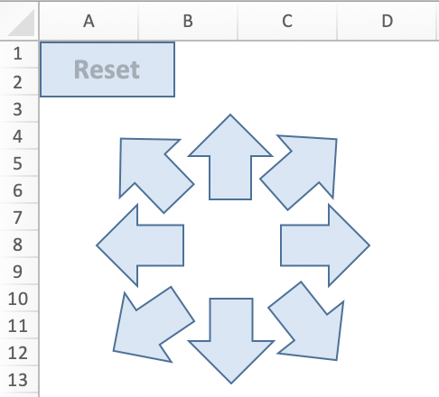
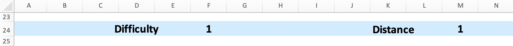

' This subroutine resets the game Sub ResetGame() ClearMonsters ' Remove any monsters from a previous game StartTheGame ' Get things ready for the game End Sub
NextPlayerRow = ActiveCell.Row NextPlayerColumn = ActiveCell.Column - 1 If NextPlayerColumn >= 1 Then ' Check the next column exists If Cells(NextPlayerRow, NextPlayerColumn).Interior.ColorIndex = 2 Then ' 2 is white Cells(NextPlayerRow, NextPlayerColumn).Select ' Move to new location HandleMonsterPosition ' to be implemented in section 2 CheckForEndOfGame ' to be implemented in section 3 End If End If
NextPlayerRow = . . . fill in your code here . . . NextPlayerColumn = . . . fill in your code here . . . If . . . fill in your code here . . . Then If Cells(NextPlayerRow, NextPlayerColumn).Interior.ColorIndex = 2 Then ' 2 is white Cells(NextPlayerRow, NextPlayerColumn).Select ' Move to new location HandleMonsterPosition ' to be implemented in section 2 CheckForEndOfGame ' to be implemented in section 3 End If End If

If Not GameIsBeingPlayed Then Exit Sub ' Stop running this subroutine End If
Cells(MonsterRow, MonsterColumn).Interior.ColorIndex = 2 ' Change the cell color to white
NextMonsterRow = MonsterRow ' Copy current row number of monster NextMonsterColumn = MonsterColumn ' Copy current column number of monster
If MonsterRow > ActiveCell.Row Then ' If monster is below the player NextMonsterRow = NextMonsterRow - 1 ' Move monster up ElseIf MonsterRow < ActiveCell.Row Then . . . fill in your code here . . . ' Move monster down End If
If . . . fill in your code here . . . Then NextMonsterRow = MonsterRow ' Use original row value End If
If MonsterColumn > ActiveCell.Column Then ' If monster is on right of player . . . fill in your code here . . . ' Move monster left ElseIf MonsterColumn < ActiveCell.Column Then . . . fill in your code here . . . ' Move monster right End If

Click on the image to see its original size
MonsterRow = NextMonsterRow ' Set the "next" position, copy row value MonsterColumn = NextMonsterColumn ' Set the "next" position, copy column value ' After setting, use green color to indicate monster position Cells(MonsterRow, MonsterColumn).Interior.ColorIndex = 4 ' 4 is green, the monster color
If player column = 20 Then Show a msgbox with a message like "You escaped the monster!" Hide the monster Put False into the variable GameIsBeingPlayed to denote the finish of the game 'Continue in the next part...
'Resume from the previous part... ElseIf monster's row is the same as player's row, and monster's column is the same as player's column Then Show a msgbox with a message like "The monster has eaten you!" Hide the monster Tell the code that the game has finished End If


Function PlayerMonsterDistance() ' calculate distance ' show the distance in a cell ' return the distance End Function
Distance = PlayerMonsterDistance()
MsgBox Sqr(100) ' Show the square root of 100
will show the answer of 10, which is the square root of 100Distance = PlayerMonsterDistance() ' Get the current distance from the function If Distance <= Range("F24").Value Then MsgBox "The monster has eaten you!" End If
{kind=link}
{kind=link}